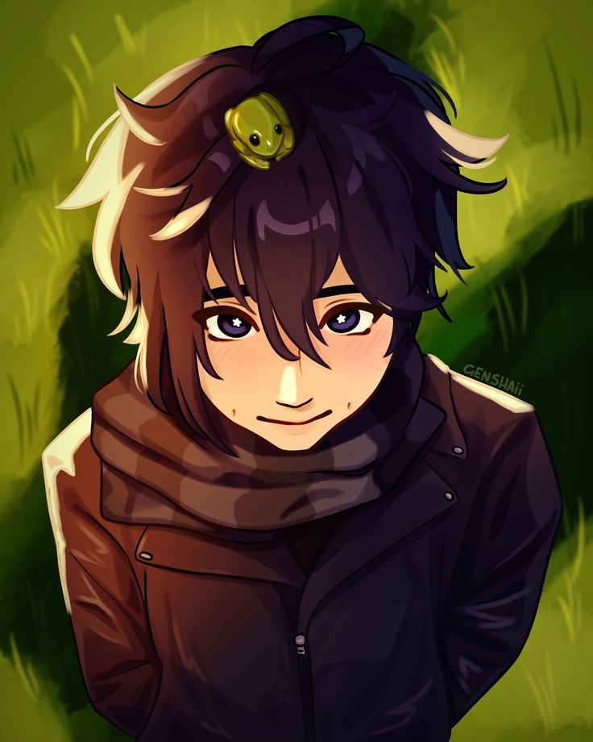
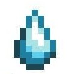
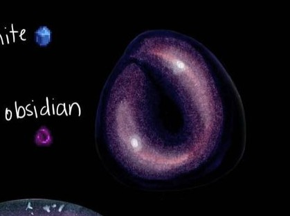
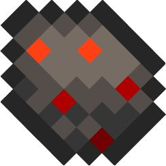
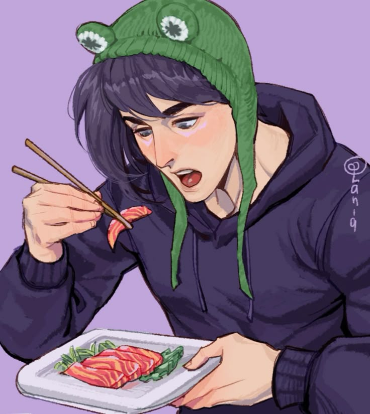
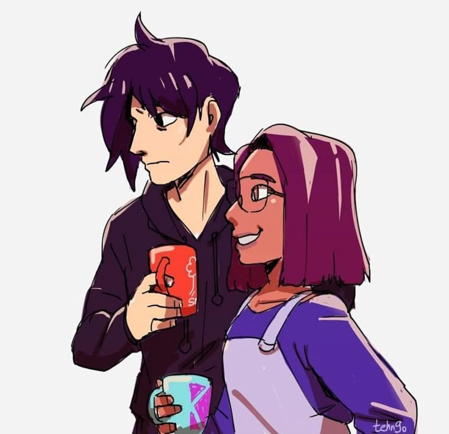
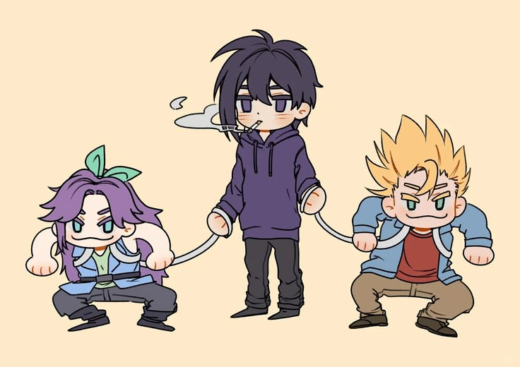
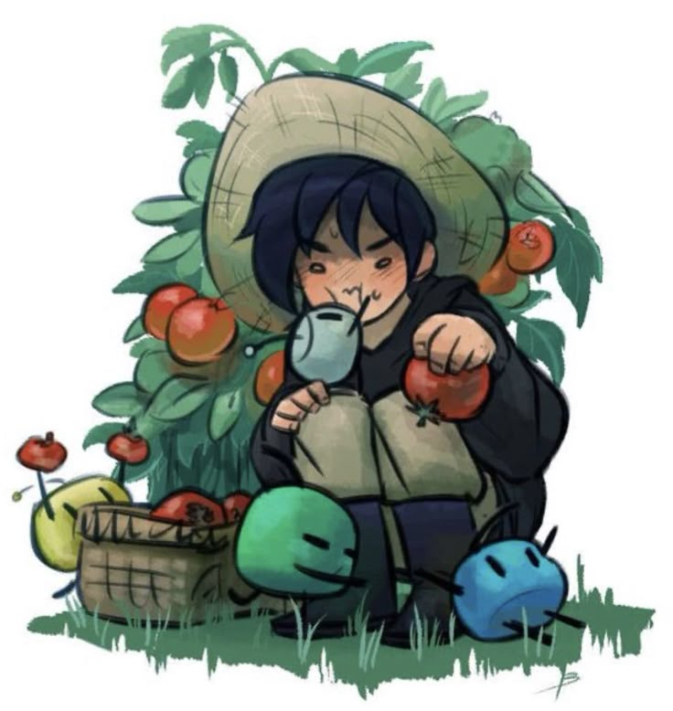
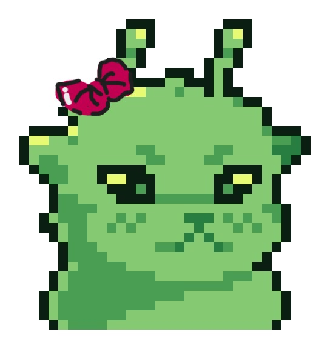

Sebastián es un personaje del videojuego Stardew Valley. Vive en las montañas, en la casa de su madre Robin, junto con su padrastro Demetrius y su media hermana Maru. Su habitación está en el sótano, lo que refleja bastante su personalidad reservada. Es una persona introvertida, seria y algo solitaria. Prefiere pasar tiempo solo, normalmente trabajando en su computadora como programador o saliendo en su motocicleta. Tiene un estilo más oscuro y alternativo, lo que se nota en su forma de vestir y en sus gustos. A Sebastián le gustan mucho las noches y la lluvia; suele sentirse más cómodo cuando el clima es tranquilo o melancólico. También disfruta fumar ocasionalmente y tocar música, especialmente algo más relajado o indie. Aunque al principio puede parecer distante o frío, en realidad es alguien sensible y reflexivo. Con el tiempo, si el jugador gana su confianza, muestra un lado más amable, leal e incluso romántico. Uno de sus sueños es mudarse a la ciudad para tener más oportunidades y escapar un poco de la rutina del pueblo, aunque también tiene conflictos internos sobre dejar atrás a su familia.
La Lágrima Congelada se consigue principalmente en las Minas, entre los pisos 40 y 79, que son los niveles de hielo. A menudo aparece tirada en el suelo para recogerla, otras formas de conseguirla son derrotando Dust Sprites, abriendo Geodas Congeladas y algunas Geodas Omni y en cofres de tesoro al pescar.

La obsidiana es un mineral que puede encontrarse de varias formas en Stardew Valley. La manera más común de conseguirla es abriendo geodas, especialmente las Geodas Magma que se obtienen en los niveles más profundos de las minas. También puede aparecer en cofres del tesoro al pescar y, en ocasiones, estar disponible para su compra en el Carro Ambulante. Además de ser un mineral valioso para donar al museo, la obsidiana es uno de los regalos favoritos de Sebastian, por lo que resulta muy útil para aumentar rápidamente el nivel de amistad con él.

El huevo de vacío es un objeto especial de Stardew Valley que se obtiene principalmente cuando una gallina de vacío pone un huevo. Para conseguir una gallina de vacío, primero necesitas obtener un huevo de vacío, lo cual puede ocurrir de forma aleatoria cuando la Bruja visita tu gallinero durante la noche y transforma uno de los huevos. También es posible comprar un huevo de vacío en algunas ocasiones al Carro Ambulante. Una vez que tengas el huevo, puedes colocarlo en una incubadora para obtener una gallina de vacío que seguirá produciendo más huevos de vacío

El sashimi es una comida que puede prepararse en Stardew Valley utilizando cualquier tipo de pescado. Para cocinarlo, el jugador necesita obtener la receta, que puede conseguir al alcanzar cierto nivel de amistad con Linus. Debido a que solo requiere un pescado como ingrediente, es una de las recetas más fáciles y económicas de preparar. El sashimi también puede encontrarse ocasionalmente en algunas fuentes de comida dentro del juego.


Sebastian vive en las montañas junto a su madre Robin, su padrastro Demetrius y su media hermana Maru. Su relación con Robin es relativamente cercana, ya que ella se preocupa por él, aunque Sebastián a veces siente que no logra comprender del todo su forma de ser o sus intereses. Con Demetrius, la relación es más complicada y tensa; Sebastián percibe que su padrastro no conecta con él y que, en ocasiones, muestra preferencia hacia Maru, lo que genera cierta incomodidad. En cuanto a Maru, no existe un conflicto directo, pero sí una distancia emocional evidente. Sebastián no se siente del todo integrado en la dinámica familiar, lo que refuerza su tendencia a aislarse.

Dentro de su círculo social, Sebastián mantiene una relación cercana con Sam y Abigail. Con Sam comparte una amistad muy sólida; suelen pasar tiempo juntos, tocar música y relajarse, lo que muestra un lado más tranquilo y accesible de Sebastián. Abigail también es una amiga importante, ya que ambos comparten intereses similares, como lo alternativo, lo oscuro y lo fuera de lo convencional. Cuando están juntos, Sebastián se siente más cómodo expresándose, lo que contrasta con su comportamiento más reservado en otros contextos.

La forma en que Sebastián se relaciona con los demás está profundamente influenciada por su personalidad introvertida. Le cuesta abrirse emocionalmente y suele mantener cierta distancia al inicio, lo que puede hacer que parezca frío o desinteresado. Sin embargo, esta actitud es más una forma de protección que una falta de interés. A medida que gana confianza, demuestra ser una persona leal, sensible y reflexiva. Sus amistades son muy importantes para él, ya que le brindan un espacio donde puede ser auténtico sin sentirse juzgado. Aun así, mantiene un deseo constante de independencia, lo que se refleja en su sueño de mudarse a la ciudad y construir su propio camino, lejos de las tensiones familiares.
Nombre de el alumno: Kamila Leon Garcia

Escuela: CBTIS93
Materia: Diseña Aplicaciones Moviles Multplataforma